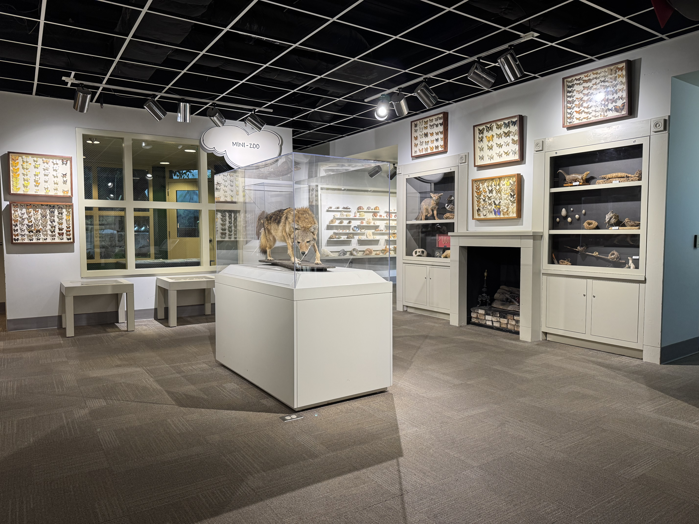
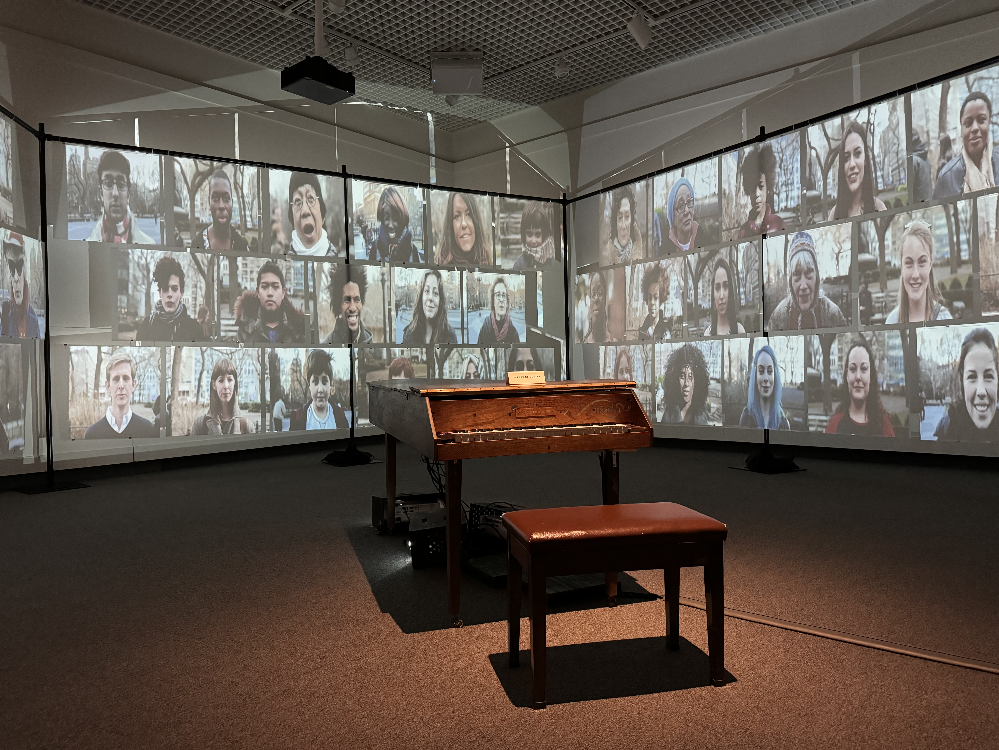

Six artists. Interactive digital installations. And a public programming initiative that transformed complex technology — AI, blockchain, IT networking — into visceral, participatory experiences that anyone could understand.
What began as a curatorial initiative — inviting six artists to create interactive digital installations — became something far more significant: a model for using art to teach the public about the technologies shaping their lives.
Each artist worked at the intersection of contemporary art and emerging technology. Their installations didn't just use AI, blockchain, or networked systems as tools — they made the technology itself visible, tangible, and intellectually accessible to every visitor who engaged with the work.
The result was a public programming initiative unlike anything the museum had done before. Visitors who came for the art left understanding something about artificial intelligence. Visitors who came for the technology left moved by something beautiful. The two were inseparable.
Each technology was introduced not through explanation, but through direct visitor interaction with artist-created installations — making abstract concepts tangible and memorable.
Mark Walhimer identified and partnered with six artists working at the leading edge of art and technology practice. Each artist brought a distinct technology to life through an interactive installation — creating an exhibition that functioned simultaneously as contemporary art and as informal technology education.
An interactive work exploring machine learning and neural networks — inviting visitors to co-create imagery and text with an AI system, making the mechanics of generative models visible and participatory.
An installation that visualized blockchain transactions in real time, transforming the abstract concept of distributed trust and immutable records into a living, breathing visual system visitors could observe and interact with.
A physical and digital sculptural work mapping live network traffic and data flows — making the invisible infrastructure of the internet tangible, beautiful, and comprehensible to non-technical visitors.
An immersive audio installation using algorithmic composition and real-time data inputs to generate music that responded to visitor presence, temperature, and time of day — demonstrating how computers can create and adapt in real time.
A large-scale visualization work drawing on publicly available datasets to create dynamic, ever-changing portraits of the community — illustrating how data is collected, structured, and interpreted to tell stories about people and places.
A generative art environment where visitors' movements and choices directly shaped the visual output — demonstrating feedback loops, input-output relationships, and the fundamental logic of interactive computing through playful, accessible engagement.


What made this initiative genuinely innovative was not the installations themselves — it was the public programming layer built around them. Curator-led talks, artist demonstrations, and hands-on workshops transformed each installation into a classroom without walls.
Visitors didn't just look at art. They learned why it worked — and in doing so, they learned how the technologies underpinning modern life actually function.
Visitors engaged with AI-generated content and learned how machine learning models are trained, what neural networks actually do, and how AI is already shaping the images, music, and text they encounter every day.
Through the visual language of the blockchain installation, visitors grasped the concept of decentralized record-keeping — why it matters, how it works, and what it means for digital ownership, identity, and finance.
The network sculpture made invisible infrastructure visible — helping visitors understand how information travels across the internet, what data packets are, and why the physical and digital infrastructure of connectivity matters.
Each installation modeled principles of interaction design — feedback loops, real-time responsiveness, generative systems — giving visitors an intuitive foundation for understanding how digital products and experiences are built.
Museums have long served as institutions of public learning — but the question of how to make emerging technology comprehensible and relevant to general audiences remains one of the most pressing challenges in informal education.
The Art & Tech Collaboration at the Museum of Arts and Sciences offers an answer: use art as the entry point. Art creates emotional engagement before intellectual understanding. It invites curiosity without prerequisite knowledge. It makes people want to understand how something works.
The six artist collaborations didn't just bring new visitors to the museum — they created a repeatable, scalable programming model that other institutions can adopt. The methodology is transferable. The impact is measurable. And the precedent is now set.
"The most effective way to teach people about the technologies shaping their world is to let them experience something beautiful made from those technologies — and then ask them how it works."
Mark Walhimer — Museum Planning, LLCInstitutional restructuring, Discovery House planning, org chart, HR systems, and community reconnection.